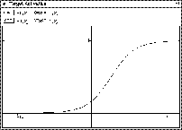

The characteristic functions of the units can be displayed in a graphic representation. For this purpose separate displays have been created, that can be called by selecting the options display activation function or display output function in the menu under the options button of the target and source unit in the info panel.

Figure  shows an example of an activation function. The
window header states whether it is an activation or an output
function, as well as whether it is the current function of the source
or target unit.
shows an example of an activation function. The
window header states whether it is an activation or an output
function, as well as whether it is the current function of the source
or target unit.
The size of the window is as flexible as the picture range of the displayed function. The picture range can be changed by using the dialog widgets at the top of the function displays. The size of the window may be changed by using the standard mechanisms of your window manager.
If a new activation or output function has been defined for the unit, the display window changes automatically to reflect the new situation. Thereby it is easy to get a quick overview of the available functions by opening the function displays and then clicking through the list of available functions (This list can be obtained by selecting select activation function or select output function in the unit menu).